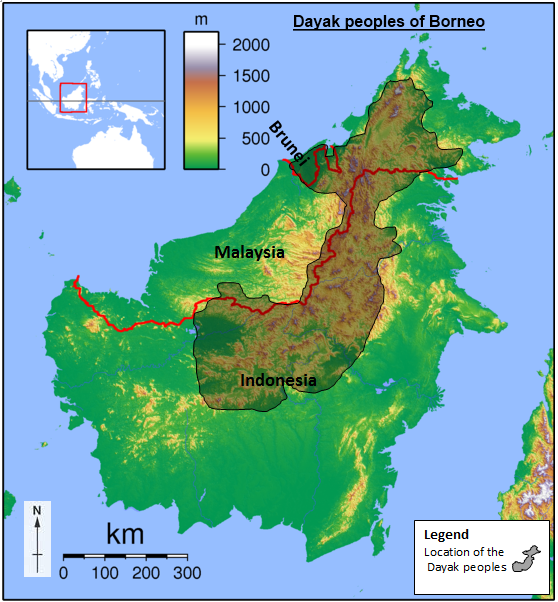
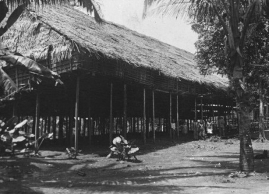
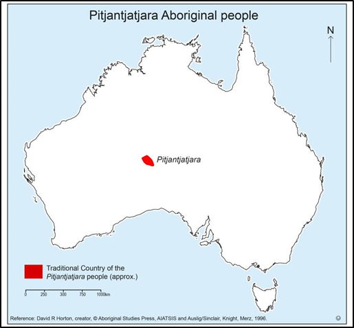
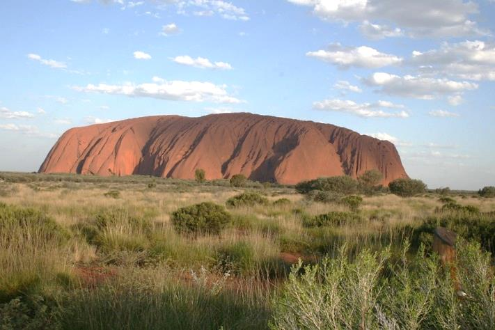
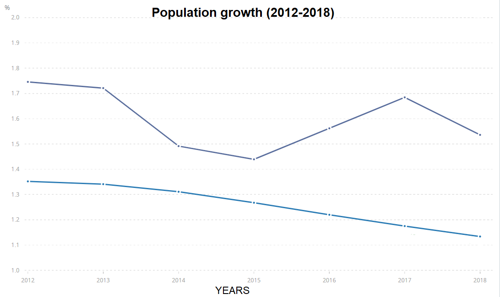
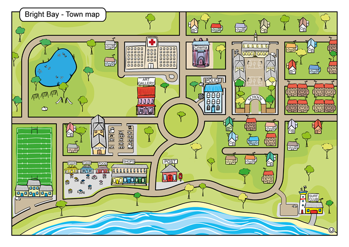
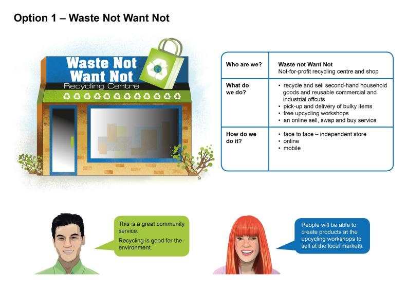
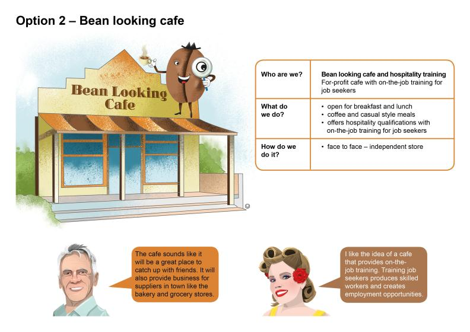
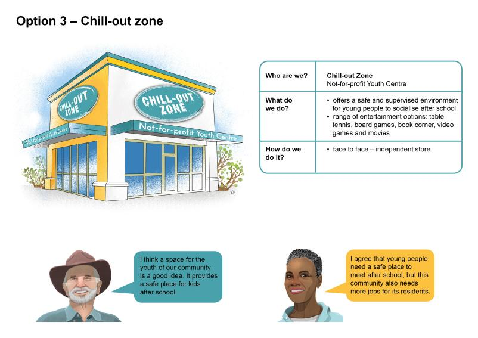

| Student Name | Class | Teacher | Date |
|---|---|---|---|
| [ Type your full name ] | [ Type class ] | [ Type teacher name ] | [ Type date ] |
Unit 2 — Connections to Places: Local and Global Connections
Task Purpose:
Instructions:
1. Part A: Create an Information Guide comparing Australia and Indonesia. Complete your research notes in the planning sections below (Mapping, Diverse Characteristics, Climate, First Nations Peoples, and Demographic Data).
2. Part B: Make Decisions to Benefit the Community. Analyse three business proposals for vacant land in Bright Bay, evaluate their trade-offs, rank the options, write a justified recommendation, and design a birds-eye site map.
Scenario: Your school is planning a one-month student exchange with a school in Jakarta, Indonesia. A group of students from each school will experience life in the other country by attending school and visiting interesting places.
Your Challenge: To prepare the students for the exchange, create an information guide comparing Australia and Indonesia.
Your teacher will provide you with reference maps of Indonesia and Australia.
Map Checklist:
Attach or draw your completed comparative map below:
| [ Paste or Insert Completed Comparative Map Here ] |
Research Australia and Indonesia using your school library resources and approved websites. Complete the comparison table below.
| Characteristic / Question | Australia | Indonesia |
|---|---|---|
| Location Description Describe Indonesia's location in relation to Australia. |
[ Type description of Australia's location ] | [ Type description of Indonesia's location in relation to Australia ] |
| Natural Features (e.g., mountains, major rivers, rainforests, deserts) |
[ Type 2-3 natural features in Australia ] | [ Type 2-3 natural features in Indonesia ] |
| Constructed Features (e.g., bridges, monuments, historic buildings, towers) |
[ Type 2-3 constructed features in Australia ] | [ Type 2-3 constructed features in Indonesia ] |
| Total Population | [ Type Australia's population ] | [ Type Indonesia's population ] |
| National Capital City | [ Type Australia's capital city ] | [ Type Indonesia's capital city ] |
| Population of Capital City | [ Type population of capital ] | [ Type population of capital ] |
| Absolute Location of Capital City | Latitude: [ Type lat ] Longitude: [ Type long ] |
Latitude: [ Type lat ] Longitude: [ Type long ] |
| Main Languages Spoken | [ Type main languages ] | [ Type main languages ] |
| Major Religions | [ Type major religions ] | [ Type major religions ] |
Find 12-month climate data for your local town/city in Australia and Jakarta, Indonesia.
| Month | Local Australian Location: [ Type Town ] — Rainfall (mm) | Local Australian Location: [ Type Town ] — Temp (°C) | Jakarta, Indonesia — Rainfall (mm) | Jakarta, Indonesia — Temp (°C) |
|---|---|---|---|---|
| January | [ mm ] | [ °C ] | [ mm ] | [ °C ] |
| February | [ mm ] | [ °C ] | [ mm ] | [ °C ] |
| March | [ mm ] | [ °C ] | [ mm ] | [ °C ] |
| April | [ mm ] | [ °C ] | [ mm ] | [ °C ] |
| May | [ mm ] | [ °C ] | [ mm ] | [ °C ] |
| June | [ mm ] | [ °C ] | [ mm ] | [ °C ] |
| July | [ mm ] | [ °C ] | [ mm ] | [ °C ] |
| August | [ mm ] | [ °C ] | [ mm ] | [ °C ] |
| September | [ mm ] | [ °C ] | [ mm ] | [ °C ] |
| October | [ mm ] | [ °C ] | [ mm ] | [ °C ] |
| November | [ mm ] | [ °C ] | [ mm ] | [ °C ] |
| December | [ mm ] | [ °C ] | [ mm ] | [ °C ] |
1. Packing Advice: What clothes will exchange students need to pack for a visit in November?
| [ Type your packing advice for exchange students visiting in November ] |
2. Climate Evidence: What specific climate data (temperature and rainfall) informs your advice about clothing?
| [ Type the data evidence that justifies your clothing recommendations ] |
3. Activities & Recreation: What recreation, outdoor activities, or sports could exchange students try based on the climate and geography?
| [ Type suggested sports, recreation, and outdoor activities for each country ] |
4. Interesting Places: What interesting natural or cultural places could exchange students visit?
| [ Type recommended places to visit in Australia and Indonesia ] |
5. Key Differences: Using the data you collected, what are the most significant differences Australian students will notice when they arrive in Indonesia?
| [ Type key environmental, climatic, and cultural differences students will experience ] |
6. Key Similarities: Explain how these two countries are similar and how those similarities will affect exchange students' experiences.
| [ Type key similarities and their impact on exchange students ] |
Examine Source 1 (Dayak Peoples of Borneo) and Source 2 (Pitjantjatjara People of Central Australia) below.

Dayak peoples of Borneo locator topography map

A Dayak longhouse community

Pitjantjatjara traditional country map

Uluru in Central Australia
Write a detailed paragraph for each First Nations group explaining how their traditional way of life, shelter, food gathering, and culture are directly connected to their environment.
| First Nations Group | How Way of Life Connects to the Environment |
|---|---|
| The Dayak Peoples (Equatorial Rainforest, Borneo) |
[ Write your paragraph explaining how the Dayak peoples adapted their shelter, food, farming, and culture to the tropical rainforest environment ] |
| The Pitjantjatjara People (Arid Desert, Central Australia) |
[ Write your paragraph explaining how the Pitjantjatjara people adapted their water management, hunting, burning practices, and Tjukurpa to the desert environment ] |

Annual Population Growth Rate Graph: Australia vs Indonesia
Graph modified from The World Bank (Annual Population Growth %).
Describe the patterns and trends shown in the graph for both Australia and Indonesia:
| [ Describe the population growth trends: Australia's fluctuating rate between 1.44% and 1.75% vs Indonesia's steady downward trend from 1.35% to 1.13% ] |
| Demographic & Economic Characteristic | Australia | Indonesia | ||
|---|---|---|---|---|
| Total Population | ~25.5 million | ~270 million | ||
| Rural vs Urban Population Split | Rural: 14% | Urban: 86% | Rural: 45% | Urban: 55% |
| Access to Safe Drinking Water | Rural: 100% | Urban: 100% | Rural: 79% | Urban: 94% |
| Gross National Income (GNI) per person (AUD) | $77,000 (High Income) | $5,550 (Lower-Middle Income) | ||
| Doctors per 10,000 People | 37 doctors | 4 doctors | ||
| Life Expectancy at Birth | 83 years | 72 years |
Data sourced from Central Intelligence Agency (World Factbook) and The World Bank.
Explain the key socio-economic differences between Australia and Indonesia using data from the table:
| [ Explain how differences in GNI, urbanisation, healthcare access, and water infrastructure affect living standards in each country ] |
Australia and Indonesia are close regional neighbours with significant global interconnections (e.g., trade, international education, tourism, development aid programmes, disaster response, cultural exchange).
Choose one interconnection and explain how it has affected people, places, animals, or environments over time:
| [ Type your explanation of a chosen interconnection e.g. trade/agriculture, tourism in Bali, educational exchanges, or environmental conservation programmes ] |
Inquiry Question: What is the best use of vacant land based on a community's needs and wants?
Scenario: In the coastal town of Bright Bay, there is a parcel of vacant council land situated directly next to the Art Gallery. The local council and residents are deciding how to develop this land.

Bright Bay Town Map showing vacant land next to Art Gallery
Community Assessment Criteria — The development must:
1. Social: Provide an engaging place for individuals and community members to socialise.
2. Economic: Provide tangible economic benefits and employment for Bright Bay.
3. Environmental: Be positive and sustainable for the local natural environment.
The Shortlisted Proposals:
| Proposal 1: Waste Not Want Not | Proposal 2: Bean Looking Café | Proposal 3: Chill-out Zone |
|---|---|---|
|  Not-for-Profit Recycling Centre & Shop |
 For-Profit Café & Training Organisation |
 Not-for-Profit Youth Centre |
Why is it vital for the Bright Bay community council to make an informed decision?
| [ Explain why collecting data, researching community needs, and consulting residents is essential before committing council funds ] |
Explain why the decision on how to use the vacant land will inevitably involve trade-offs:
| [ Explain the concept of opportunity cost and trade-offs: choosing one business means giving up the unique benefits of the other two ] |

Source 3: Waste Not Want Not Proposal Details and Community Voices

Source 4: Bean Looking Cafe Proposal Details and Community Voices

Source 5: Chill-out Zone Proposal Details and Community Voices
Evaluate how each business proposal addresses the three community criteria, then rank them from 1 (Best) to 3.
| Evaluation Criteria | Waste Not Want Not (Recycling Centre) | Bean Looking Café (Hospitality Training) | Chill-out Zone (Youth Centre) |
|---|---|---|---|
| 1. Social Benefits How does it provide a place for people to socialise and connect? |
[ Type social benefits of Waste Not Want Not ] | [ Type social benefits of Bean Looking Café ] | [ Type social benefits of Chill-out Zone ] |
| 2. Economic Benefits How does it generate economic activity, jobs, or savings? |
[ Type economic benefits of Waste Not Want Not ] | [ Type economic benefits of Bean Looking Café ] | [ Type economic benefits of Chill-out Zone ] |
| 3. Environmental Benefits How does it protect or enhance the local environment? |
[ Type environmental benefits of Waste Not Want Not ] | [ Type environmental benefits of Bean Looking Café ] | [ Type environmental benefits of Chill-out Zone ] |
| Overall Community Ranking (Rank 1, 2, or 3 — where 1 is the best option) |
[ Rank: 1 / 2 / 3 ] | [ Rank: 1 / 2 / 3 ] | [ Rank: 1 / 2 / 3 ] |
Write a persuasive, evidence-based paragraph to the Bright Bay Town Council justifying your recommended proposal. Use economic and business terms including trade-off, goods and services, consumer demand, economic benefit, social benefit, and environmental sustainability.
| Structural Element | Student Response Plan |
|---|---|
| Topic Sentence State your chosen proposal clearly. |
[ State your clear recommendation for the vacant land in Bright Bay ] |
| Explain Goods & Services What goods and services does this business provide to consumers? |
[ Explain the specific goods (products) and services (activities/training) it offers ] |
| Elaborate on Triple-Bottom-Line Benefits Explain its social, economic, and environmental impacts. |
[ Detail the specific social, economic, and environmental benefits supported by evidence from the sources ] |
| Acknowledge Trade-Offs & Link Conclusion Acknowledge what is given up and conclude strongly. |
[ Explain the trade-off involved and write a concluding sentence that reinforces your recommendation ] |
| [ Write your full, polished, multi-sentence recommendation paragraph here using formal evaluative language and evidence ] |
Draw a detailed birds-eye (aerial) site plan for your chosen business on the Bright Bay vacant land.
Site Map Requirements:
| [ Paste or Insert Completed Birds-Eye Site Map Here ] |
| Criteria | A (Excellent) | B (Good) | C (Satisfactory) | D (Developing) | E (Emerging) |
|---|---|---|---|---|---|
| Knowledge and Understanding | Explains in depth the diverse characteristics of Australia and Indonesia and how people, places, and environments are globally interconnected over time. | Explains key characteristics and similarities/differences exchange students will experience between Australia and Indonesia. | Describes, compares, and explains the diverse characteristics of Australia and Indonesia and identifies interconnections. | Identifies basic characteristics and facts about Australia and Indonesia. | States isolated facts about countries. |
| Researching and Analysing | Comprehensive analysis of multiple datasets (climate, demographic, First Nations sources) to draw sophisticated geographical conclusions. | Accurately interprets climate and demographic data; records locations and features accurately on maps with complete legends. | Locates and collects data from sources; interprets patterns and trends; represents data in tables and maps using basic conventions. | Records basic information from sources; identifies simple features on a map. | Marks basic locations on a map with guidance. |
| Communicating | Presents ideas, findings, and justified conclusions with sophisticated geographical terminology and conventions. | Uses geographical terms and communication conventions accurately throughout. | Presents ideas, findings, and conclusions using discipline-specific terms and appropriate conventions. | Communicates basic information using simple geographical terms. | States basic ideas with limited terminology. |
Part A Teacher Feedback:
| [ Teacher feedback comments for Part A will appear here ] |
| Criteria | A (Excellent) | B (Good) | C (Satisfactory) | D (Developing) | E (Emerging) |
|---|---|---|---|---|---|
| Knowledge and Understanding | Thoroughly explains the social, economic, and environmental benefits of proposals and evaluates complex trade-offs in resource allocation. | Describes why resource allocation involves trade-offs; explains how businesses provide goods and services to meet community needs. | Recognises why resource choices involve trade-offs; explains the importance of informed financial/consumer decisions and the purpose of business. | Identifies simple social, economic, or environmental factors of businesses. | Identifies isolated characteristics or outcomes of proposals. |
| Analysing, Evaluating and Reflecting | Critically evaluates all proposals against evidence; provides a compelling, sophisticated justification for the recommended action with a detailed site map. | Sorts information to identify multi-faceted impacts; justifies a recommendation with strong supporting evidence; produces an accurate site map. | Describes different views on a community issue; suggests evidence-based conclusions; represents data in a large-scale map using basic conventions. | Selects a business proposal based on simple source details; draws a basic map sketch. | Chooses an option with minimal reasoning; draws an incomplete map. |
| Communicating | Uses sophisticated economic/business terminology and evaluative language in a cohesive, persuasive, and structured response. | Uses economic and business terms and conventions appropriately in a well-structured paragraph. | Presents ideas, findings, and recommendations using discipline-specific terms and appropriate conventions. | Communicates information and a conclusion using everyday terms. | States simple ideas without economic terminology. |
Part B Teacher Feedback:
| [ Teacher feedback comments for Part B will appear here ] |